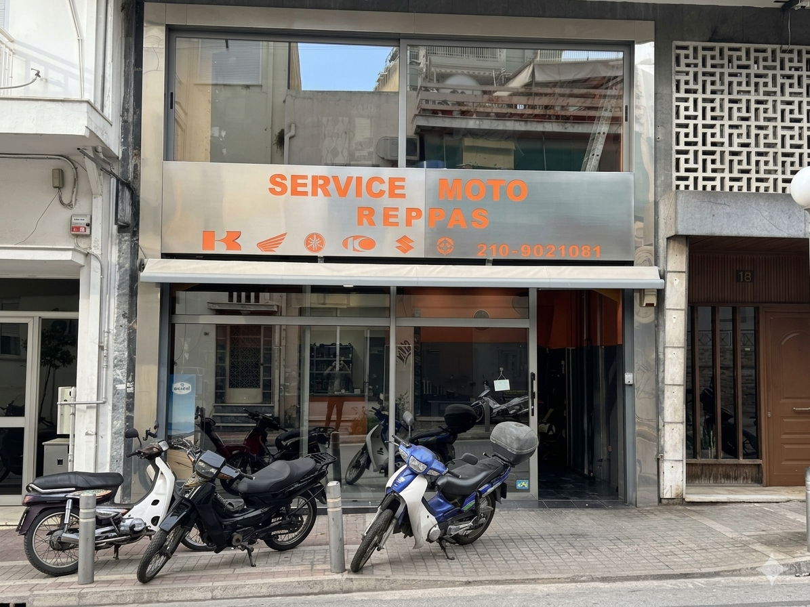
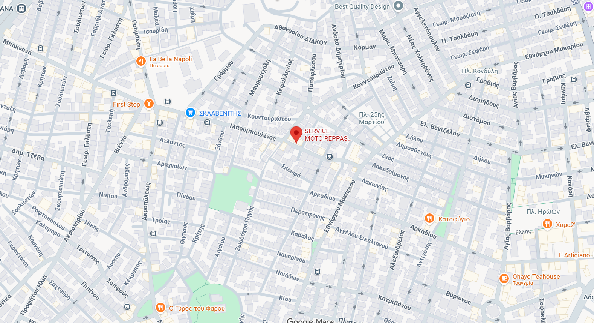
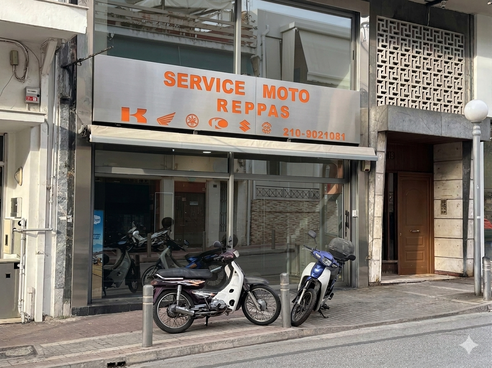
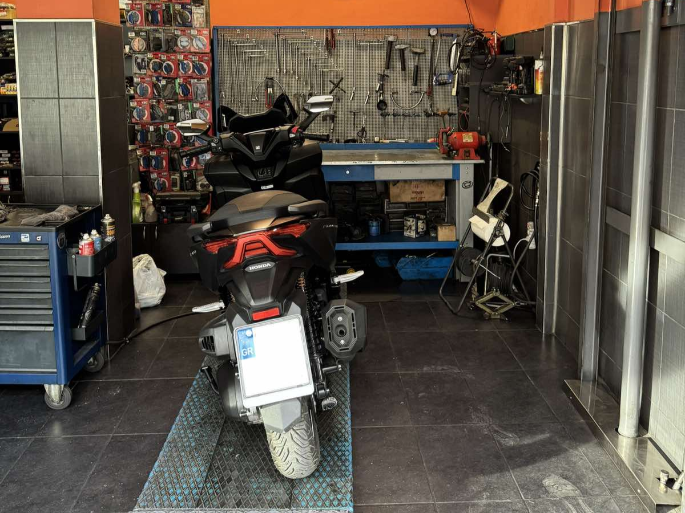
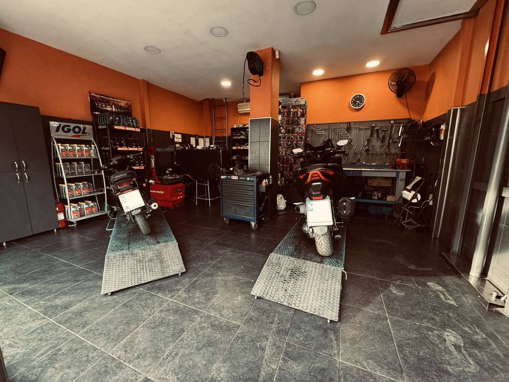
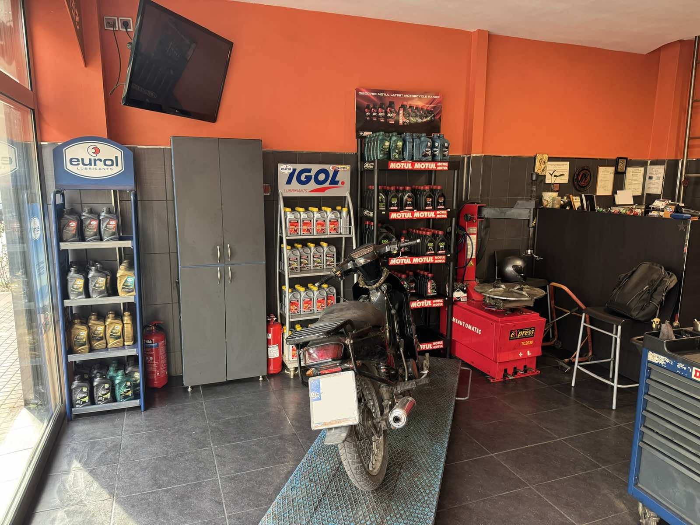
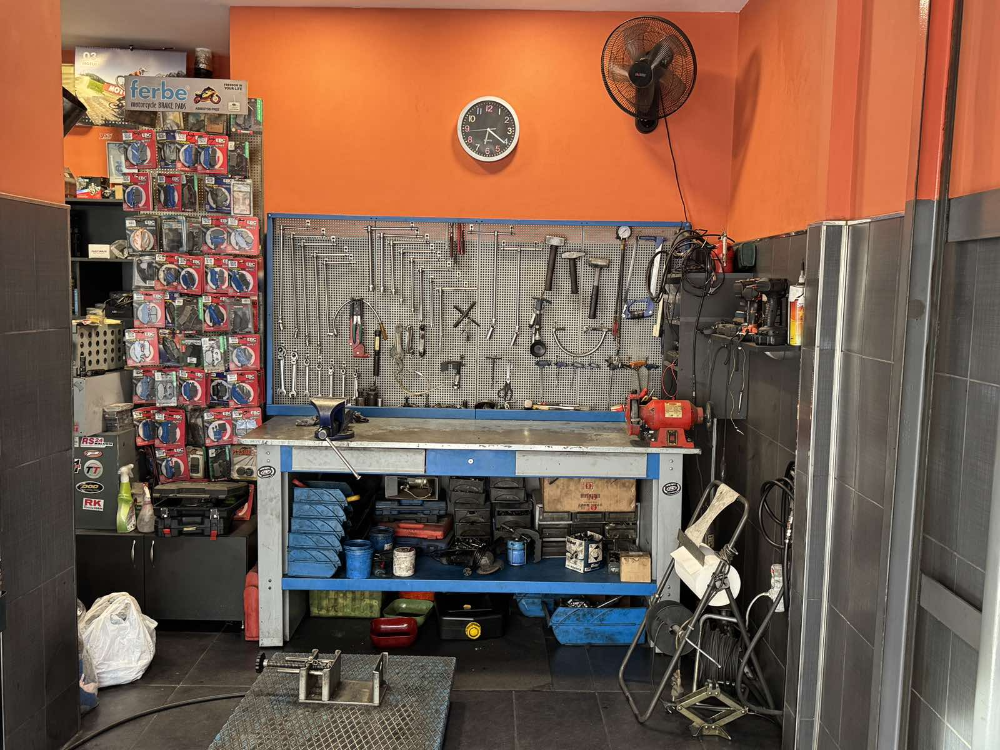
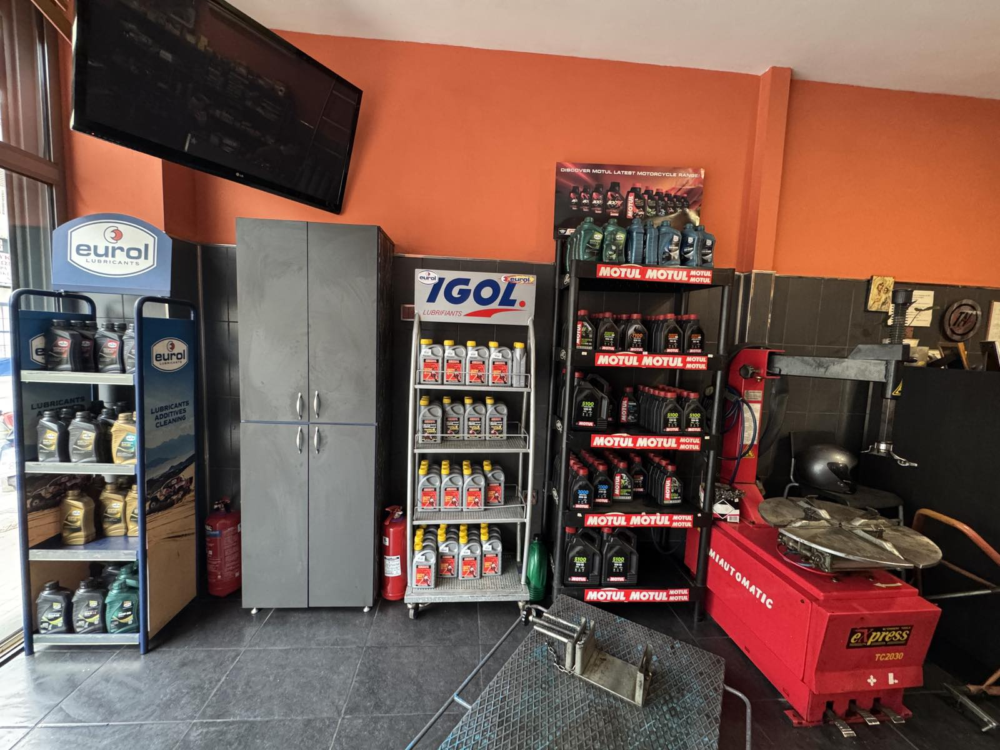

SERVICE MOTO
REPPAS



Η ΤΟΠΟΘΕΣΙΑ ΜΑΣ

Aπό το 2004 λειτουργεί στη Δάφνη, ένα από τα πλέον σύγχρονα και πρωτοποριακά συνεργεία μοτοσυκλετών στην Αθήνα. Η μακροχρόνια εμπειρία μας στον χώρο της επισκευής και της συντήρησης μοτοσυκλετών, σε συνδυασμό με τα μηχανήματα τελευταίας τεχνολογίας που διαθέτουμε, εξασφαλίζουν άριστα αποτελέσματα. Στη “SERVICE MOTO REPPAS” προσφέρονται υψηλής ποιότητας υπηρεσίες για το service και την επισκευή των μοτοσυκλετών: βελτιώσεις, διαγνωστικός έλεγχος, καλίμπρα πλαισίου, τοποθέτηση ελαστικών, τοποθέτηση συναγερμών και επισκευή αυτών, τοποθέτηση φώτων xenon, επισκευή μπροστινών συστημάτων και σκελετού, βαφή και επισκευή πλαστικών fairing, κ.α. Η επιχείρηση αναλαμβάνει μηχανάκια ιαπωνικά αλλά και ευρωπαϊκά (Honda, Yamaha, Suzuki, Kawasaki,Piaggio, SYM, Modenas, Kymco), ενώ σε κάθε service παρέχεται βιβλίο επισκευών όπου αναγράφονται οι εργασίες που πραγματοποιήθηκαν και καθορίζεται χρονικά το επόμενο service. Με γνώμονα την καλύτερη εξυπηρέτηση και την ποιοτική εργασία, η “MOTO REPPAS” επιδιώκει να έχει ευχαριστημένους πελάτες και γι’ αυτό οι τιμές είναι πάντα εξαιρετικά λογικές.






ΩΡΕΣ ΛΕΙΤΟΥΡΓΙΑΣ
ΔΕΥΤΕΡΑ: 09:00 - 18:30
ΤΡΙΤΗ: 09:00 - 18:30
ΤΕΤΑΡΤΗ: 09:00 - 18:30
ΠΕΜΠΤΗ: 09:00 - 18:30
ΠΑΡΑΣΚΕΥΗ: 09:00 - 18:30
ΣΑΒΒΑΤΟ: ΚΛΕΙΣΤΑ
ΚΥΡΙΑΚΗ: ΚΛΕΙΣΤΑ